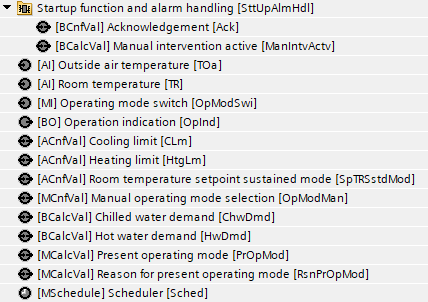
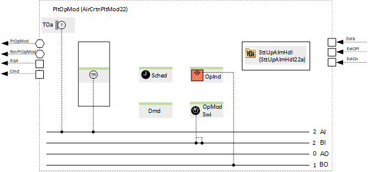
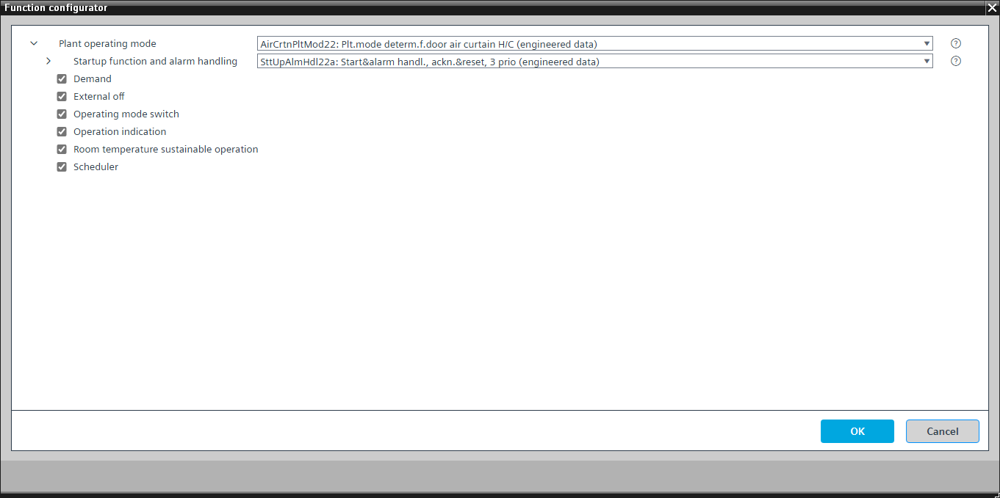

[AirCrtnPltMod22] Plant operating mode determination for door air curtain heating and cooling
Program block, name / node subtype: [AirCrtnPltMod22] Plant operating mode determination for door air curtain heating and cooling
Library hierarchy: Ventilation and air conditioning equipment
Family: AirCrtnPltMod
Project tree | Diagram |
|---|---|
 |  |
Configurator


Program blocks are stored in the library without I/Os. Use the auto-create and auto-connect functions to create I/Os and/or to connect them to the interface blocks, e.g., R_A, CMD_B. Alternatively, take the I/Os from the folder containing the predefined I/Os in the library and/or from the plant and connect them to the interface blocks.
Function
Determines the plant operating mode from multiple sources (e.g., scheduler, manual operation, room air temperature, and outside air temperature).
The program block is for plants with heating/cooling door air curtains.
Possible operating modes
Operating mode | Description |
|---|---|
Off | All aggregates are off (door air curtains are off). |
On | All aggregates are on (door air curtains are on). |
The operating mode is shown on BACnet with a multistate calculated value "Present operating mode" with the states "Off" and "On".
A parameter in the program is preset to prevent the plant from running. This is useful for testing data points. It must be switched off to start the plant.
"Startup function and alarm handling" controls the startup behavior of the plant after power-on. There is a delay after startup, "DlySttUp", of about 50 seconds. Do not change this delay. Change the delay "DlyOn" so that it is different for each plant. This ensures that plants start one after another and do not overload the electrical system. There is also a collection and aggregation of all faults and alarms from the plant. If a local alarm lamp and/or reset button is required, an alternative can be selected.
The heating limit is defined by an analog configuration value. The plant is enabled for automatic operation, e.g., by the scheduler, when the filtered outside temperature is below the heating limit value.
The cooling limit is defined by an analog configuration value. The plant is enabled for automatic operation, e.g., by the scheduler, when the filtered outside temperature is above the cooling limit value.
Outside air temperature
The outside temperature [TOa] is used filtered.
Signal name | Description | Filter constant | Use |
|---|---|---|---|
TOaEff | Effective outside air temperature | 1h |
|
Optional functions
This program block has the following optional functions:
Option: External off
Interface that can be connected to a program logic for shutting down the plant.
Option: Operating mode switch (1xMI=2xBI)
Reads the state of an operating mode switch, normally at the front of the electrical panel, and has the states "Auto", "Off", and "On".
Option: Operation indication (1xBO)
Commands a lamp (usually green) that turns on if the plant is running or that blinks if a switching operation is in progress.
Option: Scheduler
Scheduler of type MSCHED with the states "Off" and "On" that switches the plant off and on.
Even with two states only, this is a multistate scheduler (not binary) that can be extended more easily if the project requires it.
Option: Room temperature sustainable operation
Switches the plant on when the room temperature falls below the "Room temperature setpoint sustained mode" (usually far below the heating setpoint, with a value of, e.g., 12 °C) and switches it off with a hysteresis of, e.g., 2 K.
Option: Demand
Generates hot water demand or chilled water demand and displays them with two BACnet calculated values.
Mandatory elements
Name | Description | Type | Alarm / Notification class | Trend / Type | |
|---|---|---|---|---|---|
PrOpMod | Present operating mode | MCalcVal: Multistate calculated value | No | Yes, 4 | |
RsnPrOpMod | Reason for present operating mode | MCalcVal: Multistate calculated value | No | Yes, 4 | |
OpModMan | Manual operating mode selection | MCnfVal: Multistate configuration value | No | Yes, 4 | |
SttUpAlmHdl | Startup function and alarm handling | [SttUpAlmHdl22a] Startup & alarm handling, acknowledge & reset, 3 priorities | N/A | N/A | |
TOa | Outside air temperature | AI: Analog input | No | Yes, 3 | |
HtgLm | Heating limit | ACnfVal: Analog configuration value | N/A | N/A | |
CLm | Cooling limit | ACnfVal: Analog configuration value | N/A | N/A | |
Optional elements
Name | Description | Type | Alarm / Notification class | Trend / Type | |
|---|---|---|---|---|---|
OpModSwi | Operating mode switch | MI: Multistate input | No | Yes, 4 | |
Sched | Scheduler | MSchedule: Multistate scheduler | No | No | |
OpInd | Operation indication | BO: Binary output | No | No | |
Further options
Description |
|---|
Room temperature sustainable operation Elements that belong to this option: TR | Room temperature | AI: Analog input | Yes, 8 | Yes, 3 SpTRSstdMod | Room temperature setpoint sustained mode | ACnfVal: Analog configuration value | No | No |
Demand Elements that belong to this option: ChwDmd | Chilled water demand | BCalcVal: Binary calculated value | No | No HwDmd | Hot water demand | BCalcVal: Binary calculated value | No | No |
External off |